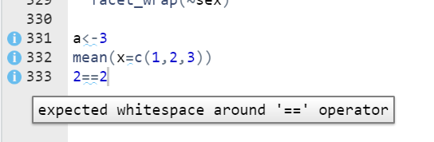
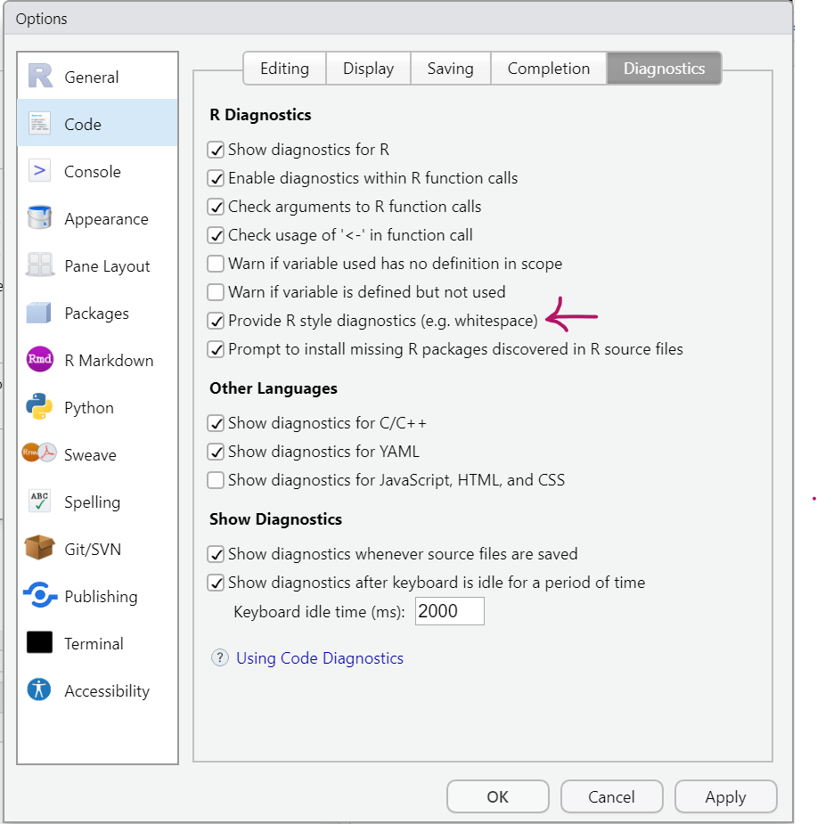
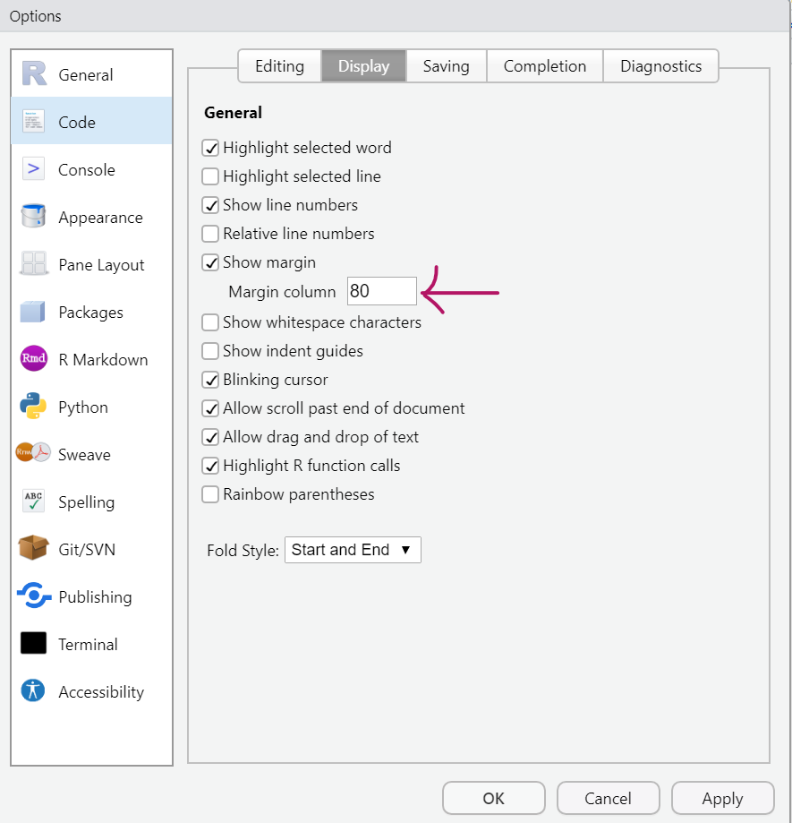
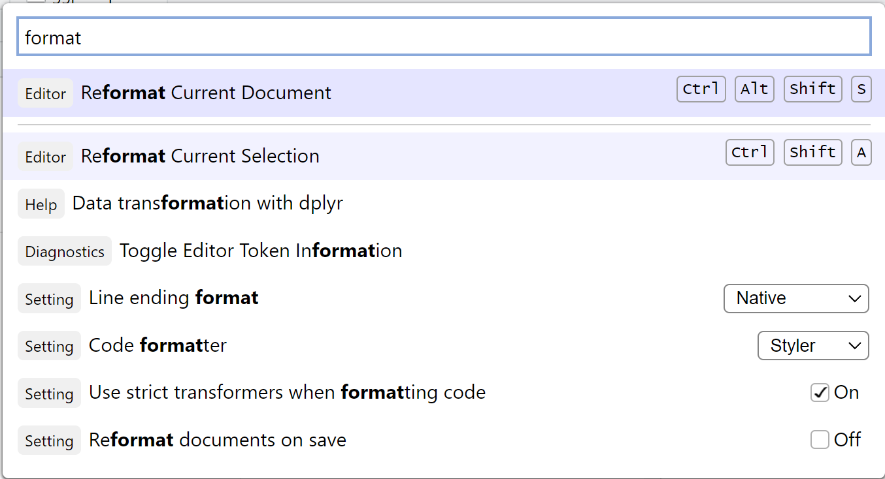

# works but not so nice
a <- 3
mean(x = c(1, 2, 3))
2 == 2
# better
a <- 3
mean(x = c(1, 2, 3))
2 == 2Good coding practice
Slides in full screen | Download PDF slides
Good practice summary
In the following you get some tips to style your code for the purpose of good practice, readability and standardization. This is not mandatory for your R code to work but it is nice to have.
General tip
Have a look at all the options you have available if you go to Tools -> Global Options. You can click through different sections on the right (the top ones are probably most interesting to you) and for every section there are again some tabs on top that show different options.
I will show you some useful options below as well.
White space
Use whitespace around operators, =, <-, …
Tip:
You can turn on information about recommended white space in RStudio. Then RStudio will let you know in the side bar, if you are missing white space that is recommended. This information will look like this:

You can turn on this option by going to Tools -> Global Options -> Code -> Diagnostics and put a checkmark for Provide R style diagnostics

Line width
Limit the width of a line of code and start a new line regularly. A standard is 80 characters.
This for example means:
- In ggplot always start a new line for each layer (after the
+) - If you have long comments, split them into multiple lines
- If you have functions with a lot of arguments, put each argument in its own line
There is a setting in RStudio that helps you with this. It puts a very thin, vertical line into each of your scripts to show you where you should better start a new line. To turn this on go to Tools -> Global Options -> Code -> Display, put a checkmark for Show margin

Why? Screens are always different and if you write very long lines you have to scroll right to read all your code.
A ggplot example:
# Don't do this:
ggplot(iris, aes(x = species, y = Petal.Width)) + geom_boxplot()
# Do this
ggplot(iris, aes(x = species, y = Petal.Width)) +
geom_boxplot()
# Or even this (depending on how long your lines are - here it's a bit
# overkill):
ggplot(
iris,
aes(x = species, y = Petal.Width)
) +
geom_boxplot()Automatically format your code
You can let RStudio format your code automatically according to the tidyverse style guide. This is done with the styler package.
Just go to Tools -> Global Options -> Code -> Formatting and select “Format document on save”:

You may have to install the styler package first using install.packages("styler"). If this is the case, you will see an error message the first time you try to save a file after turning on this option.